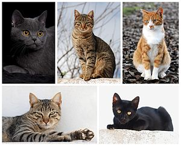
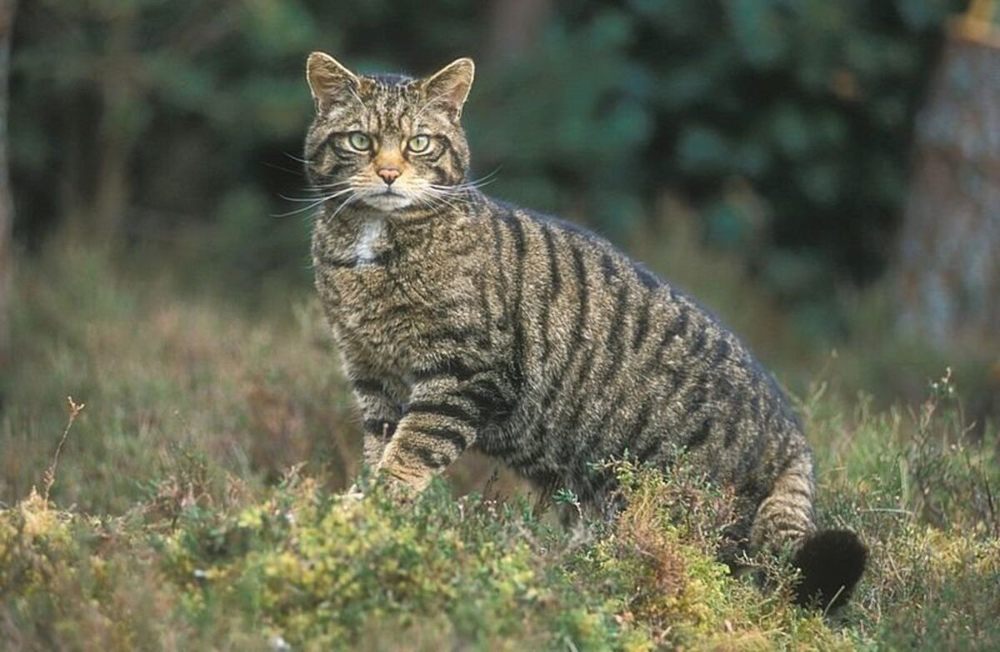
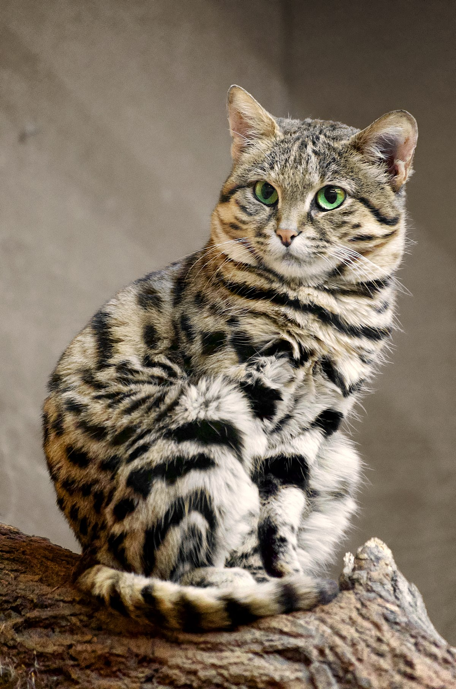
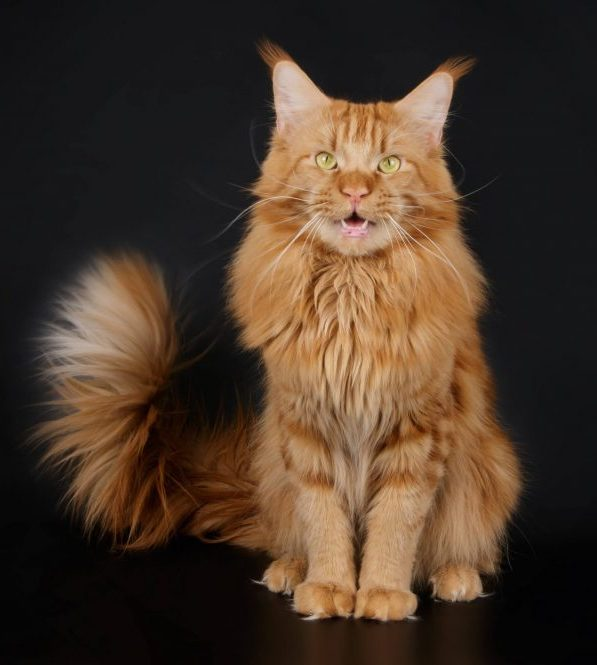
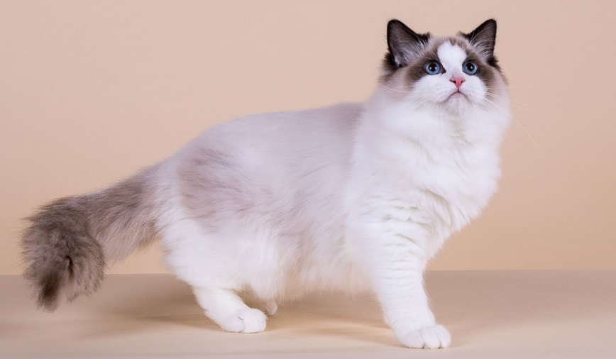
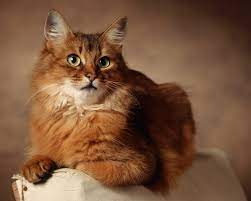
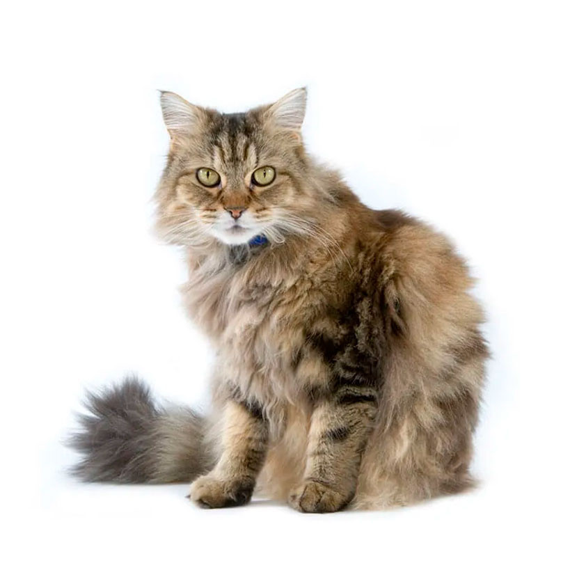

Індексація породи: ASH
Походження: Емігрування з Європи в США
Вага самок: 3-4,5 кг

Кіт сві́йський, або кі́шка сві́йська — невеликий ссавець ряду хижих родини котових.
Сучасна назва походить від латинської назви catus, що використовується для свійського кота, на відміну від дикого, який латиною називається felis.
Тривалість життя: 12 – 18 років (одомашнені)
Маса: 4 – 5 кг (дорослі особини, свійські)
Період вагітності: 65 днів
Домен: Еукаріоти (Eukaryota)
Клас: Ссавці (Mammalia)
Підродина: Felinae

Кіт лісовий — вид хижих ссавців з роду кіт родини котових. Проживає у Європі, на Кавказі й на півночі Туреччини в усіх типах лісів. В Україні рідкісний ссавець, що підлягає охороні. Вага самиць у середньому 3.5 кг, а самців 5 кг.
Трофічний рівень: М'ясоїдні Енциклопедія життя
Тривалість життя: 13 – 14 років
Тип: Хордові (Chordata)
Маса: 5 – 8 кг (самці), 3 – 5 кг (самки)
Довжина: 43 – 91 см (самці, без хвоста), 40 – 77 см (самки, без хвоста)
Природоохоронний статус: Під невеликою загрозою (Скорочення)

Кіт чорноногий, також відомий як мураховий тигр, мала плямиста кішка — вид хижих ссавців з роду Кіт родини котових. Один з найменших за розмірами тіла і найрідкісніших представників цього роду. В 2002 році чорноногому коту надали уразливого статусу.
Тривалість життя: 10 років (у неволі)
Маса: 1,9 кг (самці, дорослі особини), 1,3 кг (самки, дорослі особини)
Трофічний рівень: М'ясоїдні Енциклопедія життя
Довжина хвоста: 16 – 20 см (самці, дорослі особини), 13 – 17 см (самки, дорослі особини)
Зріст: 25 см (дорослі особини, в плечах)
Природоохоронний статус: Уразливі (Скорочення)
Тип: Хордові (Chordata)
Америка́нська короткоше́рста — порода кішок, що походить від європейських короткошерстих, завезених переселенцями в Америку.
Індексація породи: ASH
Походження: Емігрування з Європи в США
Вага самок: 3-4,5 кг

Мейн кун, Мейнська єнотова — порода кішок, родом зі штату Мен у США, де вони жили на волі й добре пристосувалися до несприятливих погодних умов.
Маса: 5,9 – 8,2 кг (самці, дорослі особини), 3,6 – 5,4 кг (самки, дорослі особини)
Довжина: 48 – 100 см (дорослі особини, від носа до хвоста)
Походження: Мен, Сполучені Штати Америки
Індексація породи: МСО
Інші назви: Мейнська єнотова, Американська довгошерста
Вага самок: 4-6,5 кг
Висота до холки: до 40 см
 Норвезька лісова — порода кішок, що пропорціями свого тіла нагадує європейську короткошерсту. Однак має одну особливість — довге водовідштовхувальне хутро, яке дуже швидко висихає після дощу.
Норвезька лісова — порода кішок, що пропорціями свого тіла нагадує європейську короткошерсту. Однак має одну особливість — довге водовідштовхувальне хутро, яке дуже швидко висихає після дощу.
FIFe: стандарт
Індексація породи: NFO
Походження: Норвегія
Вага самок: 3,5-7 кг
Висота до холки: 40-45 см

Регдол — порода великих напівдовгошерстих кішок.
Походження: Ріверсайд
Довжина: 100-120 см
Індексація породи: RAG
Вага самок: 4,5-6,5 кг
Висота до холки: до 40 см

Сомалійська, Сомалі — порода кішок, що виведена на основі абісинської породи, подібна до неї за зовнішнім виглядом і характером та відрізняється від неї довжиною шерсті.
Вищий рівень класифікації: Кіт свійський
Вага самок: 2,5-4 кг
Британська довгошерста, в Європі більш відома як брита́ніка — порода довгошерстих кішок середніх розмірів.
Походження: Великобританія
Брита́нська короткошерста — одна з найстаріших порід кішок.
Походження: Великобританія
Індексація породи: BRI
 Скоттіш-фолд, Шотландська клаповуха — порода кішок з характерною будовою вушних раковин, які загнуті вперед і вниз. Причиною незвичайної зовнішності цих кішок є генна мутація. Якщо у кошенят породи шотландська капловуха до певного віку вуха залишаються прямими, то вони отримують назву шотландські прямовухі.
Скоттіш-фолд, Шотландська клаповуха — порода кішок з характерною будовою вушних раковин, які загнуті вперед і вниз. Причиною незвичайної зовнішності цих кішок є генна мутація. Якщо у кошенят породи шотландська капловуха до певного віку вуха залишаються прямими, то вони отримують назву шотландські прямовухі.
Походження: Шотландія
Індексація породи: SFS
Інші назви: Скоттіш-фолд
Вага самок: 2—4 кг
 Бенгальська кішка - одна з наймолодших котячих порід, і відкрили її в Америці.
Бенгальська кішка - одна з наймолодших котячих порід, і відкрили її в Америці.
Походження: Сполучені Штати Америки
Індексація породи: BEN
Вага самок: до 4 кг
 Сфінкс, Канадський сфінкс, Місячна кішка — порода кішок, що виникла в результаті природної мутації.
Сфінкс, Канадський сфінкс, Місячна кішка — порода кішок, що виникла в результаті природної мутації.
Походження: Торонто
Індексація породи: SFX
Інші назви: Місячна кішка
 Бурманська, Бірманська короткошерста, Бурмезька, Бурма — порода кішок, що були виведені у Бангкоку.
Бурманська, Бірманська короткошерста, Бурмезька, Бурма — порода кішок, що були виведені у Бангкоку.
Походження: М’янма (Бірма), Таїланд
Індексація породи: BUR
Вага самок: 4,5-5 кг
 Сіамська — порода кішок, що не одне століття жили при палацах і храмах у Сіамі, поки король не подарував пару сіамських кішок британському консулові.
Сіамська — порода кішок, що не одне століття жили при палацах і храмах у Сіамі, поки король не подарував пару сіамських кішок британському консулові.
Походження: Таїланд
Вага самок: 3,0–4,0 кг
Абісинська — порода кішок, що має особливе забарвлення, схоже на забарвлення зайців або кроликів. На тілі немає ніякого малюнка. Таке забарвлення забезпечується тим, що кожен волосок має смуги, які чергуються — світлі і темні.
Походження: Ефіопія, Південно-Східна Азія
Індексація породи: ABY
Пітерболд, петербурзький сфінкс — порода ласкавих, розумних,допитливих,граливих кішок.
Походження: Санкт-Петербург
 Менкс — це порода котів з природною мутацією хребта.
Менкс — це порода котів з природною мутацією хребта.
Походження: Острів Мен
Вищий рівень класифікації: Кіт свійський

Раґамаффін — це порода домашніх котів, які вийшли в результаті схрещування регдолл з різними породистими і дворовими котами. Так заводчики вивели кота з густою красивою шубкою і великою різноманітністю забарвлень.
Вищий рівень класифікації: Кіт свійський
Походження: Каліфорнія
Наукова назва: Felis catus
 Екзотична короткошерста, Екзотична — порода кішок, що виведена в Америці при схрещуванні перських кішок з американськими короткошерстими.
Екзотична короткошерста, Екзотична — порода кішок, що виведена в Америці при схрещуванні перських кішок з американськими короткошерстими.
Походження: Сполучені Штати Америки
Індексація породи: ЕХО